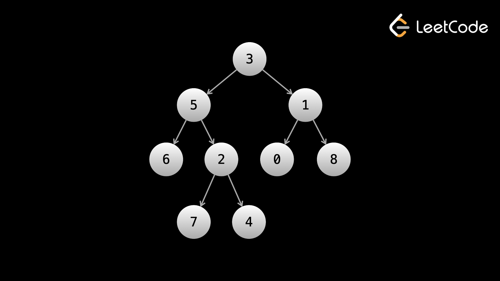
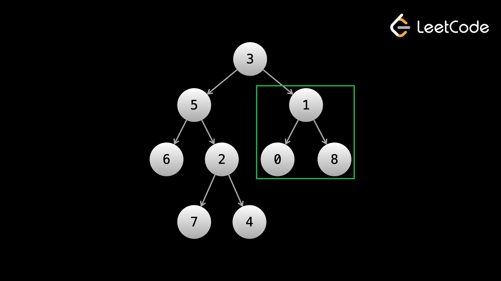

Вся эта глава будет активно использовать рекурсию. Если Вы слабы в рекурсии, пожалуйста, просмотрите статью «Введение в рекурсию» в первой главе, прежде чем продолжить.
В этой главе мы изучим деревья и графы, которые, вероятно, являются наиболее распространенным типом вопросов на собеседовании (хеш-карты на самом деле не являются «типом» вопросов, а «массив» или «строка» слишком широки). Деревья и графы — это абстрактные структуры данных, которые встречаются повсюду как в физическом мире, так и в мире программного обеспечения. Это самая длинная глава курса, и на то есть веские причины. Огромное количество задач на собеседованиях используют в качестве входных данных деревья или графы, и вся проблема сосредоточена на них. Таким образом, очень важно, чтобы каждый, кто идет на собеседование по программированию, хорошо их понимал.
Давайте начнем с повторного рассмотрения того, что такое узел. Мы рассмотрели узлы в главе о связанных списках. Напомним, что узел — это абстрактный тип данных с двумя вещами. Во-первых, узел хранит данные. Эти данные могут быть любыми: целыми числами, логическими значениями, хеш-картой, вашими собственными объектами или всем вышеперечисленным. Во-вторых, узел хранит указатели на другие узлы.
Граф — это любая совокупность узлов и их указателей на другие узлы. Фактически, связанные списки и деревья являются типами графов. Как тема, графики чрезвычайно обширны. Существует целая область исследований, посвященная графам, называемая теорией графов.
Несмотря на то, что дерево — это тип графа, деревья и графы считаются разными темами, когда речь идет об алгоритмических задачах. Поскольку графы — более сложная/сложная тема, мы начнем с рассмотрения деревьев.
Узлы графа также называются вершинами, а указатели, соединяющие их, — ребрами. В графических представлениях узлы/вершины обычно изображаются кружками, а края — линиями/стрелками, соединяющими круги (мы видели это в главе, посвященной связным спискам).
Как и связанный список, дерево представляет собой тип графа. Как и в связанном списке, существует несколько типов деревьев. В этом курсе мы сосредоточимся на двоичных деревьях. Давайте посмотрим, что такое двоичное дерево.
Напомним, что начало связанного списка называется head. Начало двоичного дерева называется root.
В связанном списке указатель узла указывает на следующий узел. В дереве узел имеет указатели на своих дочерних элементов. Если узел A указывает на узел B, то B является дочерним элементом узла A, а A — родителем узла B. Корень — это единственный узел, у которого нет родителя. Обратите внимание, что в дереве узел не может иметь более одного родителя.
Так что же делает двоичное дерево «двоичным»? В бинарном дереве все узлы имеют максимум два дочерних узла. Эти дочерние узлы называются левым ребенком и правым ребенком. Обратите внимание, что на самом деле нет разницы между тем, где находится дочерний элемент - слева или справа, это просто соглашение, используемое для обозначения дочерних элементов и удобное для графических представлений.
Подводя итог, двоичное дерево — это набор узлов. Каждый узел имеет от 0 до 2 дочерних узлов, и каждый узел, кроме корня, имеет ровно одного родителя.
Вот пример бинарного дерева:

Узел со значением 3 является корневым узлом. Как видите, каждый узел имеет ровно одного родителя и не более двух дочерних узлов. 6 — левый дочерний элемент 5, а 4 — правый дочерний элемент 2.
Деревья (не только бинарные) существуют повсюду вокруг нас в реальной жизни. Некоторые примеры:
• Файловые системы
• Ветка комментариев в таком приложении, как Reddit или Twitter
• Организационная структура компании
В каждом из этих примеров соответствующие корневые узлы и дочерние узлы будут:
• Корневой каталог и подпапки/файлы
• Исходное сообщение/твит, а также комментарии и ответы
• Генеральный директор и подчиненные
Чтобы быть более конкретными, давайте посмотрим на пример компании. Если мы смоделировали компанию как дерево, то каждый человек является узлом, и существует ребро от A до B, если A управляет B. В этом случае генеральный директор будет корнем, потому что он находится на «верхушке» компании и не управляется другими сотрудниками. Допустим, у генерального директора есть 6 прямых подчиненных — люди из высшего руководства (например, финансовый директор, главный операционный директор, технический директор). Это означает, что у генерального директора 6 «детей», а это также означает, что это не двоичное дерево. Каждому из руководителей высшего звена будут подчиняться люди, например, вице-президенты, а перед этими вице-президентами будут подчиняться директора и так далее.
Важной характеристикой компании, которая делает ее деревом, является то, что у каждого человека есть только 1 менеджер (родитель), и все дерево связано (если вы начнете с кого-либо и постоянно отслеживаете его менеджеров, вы всегда окажетесь на генеральном директоре)
Существует некоторая терминология, специфичная для деревьев, которую вам необходимо изучить.
Корневой узел — это узел на «верхушке» дерева. Каждый узел дерева доступен, начиная с корневого узла. В большинстве вопросов о деревьях в качестве входных данных будет указан root дерева, точно так же, как в связанных списках в качестве входных данных был указан head.
Если у вас есть узел A с ребром, ведущим к узлу B, то есть A -> B, то мы называем A родительским элементом узла B, а узел B — дочерним элементом узла A.
Если у узла нет дочерних элементов, он называется листовым узлом. Листовые узлы — это листья дерева.
Глубина узла — это то, насколько далеко он находится от корневого узла. Глубина корня равна 0. Глубина каждого дочернего элемента — parsDepth + 1, поэтому дочерние элементы корня имеют глубину 1, их дочерние элементы — 2 и т. д.
Наконец, пожалуй, самое важное, что нужно понять: поддеревом дерева является узел и все его потомки. Деревья рекурсивны: с поддеревом можно обращаться так, как если бы оно было отдельным деревом, причем выбранный узел является корнем. Что мы подразумеваем под этим? Давайте еще раз посмотрим на пример компании. Вся компания представлена деревом, уходящим корнями в генерального директора. Но что, если бы нас волновал только инженерный отдел? Допустим, у технического директора есть прямой подчиненный, который является SVP (старшим вице-президентом) по разработке, и все инженеры подчиняются этому человеку. Возьмите этого старшего вице-президента и отделите его от остальной компании (устраните его связь с техническим директором). Что у тебя осталось? Это по-прежнему допустимое дерево, но теперь его корнем является SVP! Это поддерево теперь представляет инженерный отдел, а не всю компанию. Это самая фундаментальная идея решения проблем с деревьями: вы можете взять любой узел и обращаться с ним как с отдельным деревом, что позволяет решать проблемы рекурсивным способом.
Чтобы проиллюстрировать концепцию поддерева, взгляните на следующее изображение:

В зеленом поле заключено поддерево с корнем в узле со значением 1. Его можно назвать правым поддеревом узла со значением 3 (корнем). Обратите внимание, что это поддерево само по себе является двоичным деревом.
Как и в случае со связанным списком, двоичные деревья реализуются с использованием объектов специального класса. Это типичное определение класса, которое вам будет предоставлено при решении задач по алгоритмам:
class TreeNode:
def __init__(self, val, left, right):
self.val = val
self.left = left
self.right = right
В задачах с двоичным деревом вам будет предоставлена ссылка на root двоичного дерева в качестве входных данных. Вы можете получить доступ к левому поддереву корня с помощью root.left и к правому поддереву корня с помощью root.right. Как и в случае со связанными списками, каждый узел также будет содержать в качестве данных значение val. В связанном списке хвост (последний узел) имеет next указатель как нулевой. В двоичном дереве, если у узла нет левого дочернего узла, то node.left будет нулевым, то же самое у правого. Помните, что если оба дочерних элемента имеют значение NULL, то узел является листом.
В следующей статье мы научимся перемещаться по двоичным деревьям и решать связанные с ними проблемы. Двоичные деревья являются одной из наиболее распространенных проблем, и важно, чтобы вы полностью поняли их природу и то, как они представлены в коде, прежде чем продолжить. Поэтому, пожалуйста, просмотрите эту статью столько раз, сколько вам нужно, пока вы не почувствуете себя комфортно.